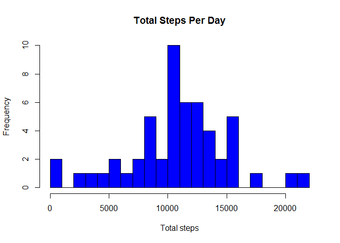
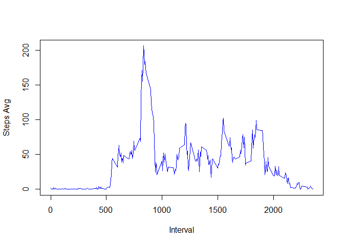
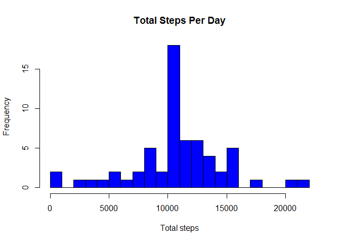
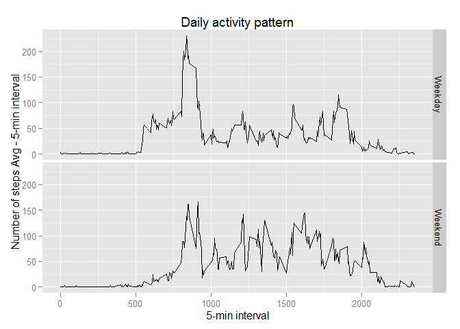

Load libraries
library(data.table)
library(plyr)
library(ggplot2)1.Load data
df <- read.csv("activity.csv")2.Transform the data into data table
df.DT = data.table(df)1.Calculate the total number of steps taken per day - ignore missing values
require(plyr)
df_clean <- na.omit(df)
dfSteps<-ddply(df_clean,.(date) ,summarise, steps = sum(steps) )2.Make a histogram of the total number of steps taken each day
hist(dfSteps$steps , breaks = 20, main="Total Steps Per Day", xlab="Total steps" ,ylab="Frequency", col="blue")
3.Calculate and report the mean and median of the total number of steps taken per day
Mean
MissingStepsMean <- mean(dfSteps$steps)
MissingStepsMean## [1] 10766.19Median
MissingStepsMedian <- median(dfSteps$steps)
MissingStepsMedian## [1] 107651.Make a time series plot (i.e. type = “l”) of the 5-minute interval (x-axis) and the average number of steps taken, averaged across all days (y-axis)
steps_interval <- aggregate(steps ~ interval , df_clean , mean)
plot (steps_interval , type = "l" , xlab = "Interval" , ylab = "Steps Avg" , col = "blue")
2.Which 5-minute interval, on average across all the days in the dataset, contains the maximum number of steps?
max_steps_rowid <- which.max(steps_interval$steps)
steps_interval[max_steps_rowid,]## interval steps
## 104 835 206.16981.Calculate and report the total number of missing values in the dataset
df_NA <- subset(df , is.na(df$steps))
nrow(df_NA)## [1] 23042.Devise a strategy for filling in all of the missing values in the dataset.
Strategy: Replace each missing value with the mean value of corresponding 5 minutes interval
3.Create a new dataset that is equal to the original dataset but with the missing data filled in.
for (i in 1:nrow(df)){
if (is.na(df$steps[i])){
intervalVal <- df$interval[i]
rowId <- which(steps_interval$interval == intervalVal)
stepsVal <- steps_interval$steps[rowId]
df$steps[i] <- stepsVal
}
}4.Make a histogram of the total number of steps taken each day and Calculate and report the mean and median total number of steps taken per day. Do these values differ from the estimates from the first part of the assignment? What is the impact of imputing missing data on the estimates of the total daily number of steps?
dfStepsFilled<-ddply(df,.(date) ,summarise, steps = sum(steps) )
hist(dfStepsFilled$steps , breaks=30,main="Total Steps Per Day", xlab="Total steps" ,ylab="Frequency", col="blue") Mean of total number os steps
FilledstepsMean <- mean(dfStepsFilled$steps)
FilledstepsMean## [1] 10766.19Median of total number os steps
FilledstepsMedian <- median(dfStepsFilled$steps)
FilledstepsMedian## [1] 10766.19The new values are a little bit higher because missing values are considered as zero , but it was replaced with values higher than 0 , then the total mean and median are higher.
1.Create a new factor variable in the dataset with two levels - “weekday” and “weekend” indicating whether a given date is a weekday or weekend day.
week <- factor(weekdays(as.Date(df$date)) %in% c("Saturday","Sunday"),
labels=c("Weekday","Weekend"), ordered=FALSE)
dfWeekDayEnd <- aggregate(df$steps, by=list(interval=df$interval, weekday=week), mean)2.Make a panel plot containing a time series plot (i.e. type = “l”) of the 5-minute interval (x-axis) and the average number of steps taken, averaged across all weekday days or weekend days (y-axis).
g <- ggplot(dfWeekDayEnd, aes(interval, x) )
g + geom_line() + facet_grid(weekday ~ .) +
labs(y="Number of steps Avg - 5-min interval") +
labs(x="5-min interval") +
labs(title="Daily activity pattern")